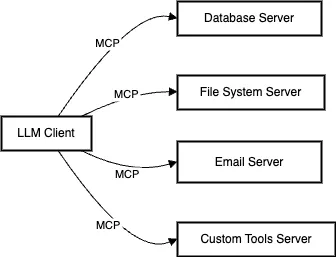
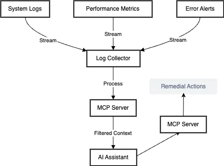

Model Context Protocol (MCP): Building Bridges Between AI and Your World
- 🏷 claude
- 🏷 chatgpt
- 🏷 mcp
- 🏷 Model Context Protocol
Imagine having a brilliant personal assistant who’s incredibly smart but can only communicate through a mailbox - they can receive your letters and write back, but can’t directly interact with your computer, check your calendar, or access your files. That’s essentially the situation with today’s Large Language Models (LLMs) like Claude or GPT-4. Sure, they’re incredibly capable, but they’re often trapped behind an API, limited to text-in, text-out interactions.
Enter the Model Context Protocol (MCP) - think of it as giving your AI assistant a complete office setup instead of just a mailbox. Just as the invention of standardized shipping containers revolutionized global trade by creating a universal way to move goods, MCP is creating a standardized way for AI models to interact with the world around them. It’s not just another API or function call system; it’s a comprehensive protocol that’s reimagining how AI models can interact with data, tools, and systems.
But why does this matter? Picture this: You’re a developer trying to build an AI-powered system to monitor your company’s servers. Without MCP, you’d need to:
- Manually extract log data
- Sanitize and format it
- Send it to an LLM
- Parse the response
- Figure out how to take action
- Repeat this for every different type of data or action
It’s like trying to build a house where every contractor speaks a different language and uses different measuring systems. MCP changes this by creating a universal “language” for AI interactions - a standardized way for AI models to access data, execute actions, and maintain context, all while preserving security and privacy.
The real magic of MCP lies in its ability to create what we might call “AI-ready” systems. Instead of building one-off integrations for each AI model and each tool, MCP provides a standard protocol that works across different AI models and different systems. It’s similar to how the HTTP protocol enabled the creation of the modern web - you don’t need to know how every website is built to be able to access it through your browser.
Consider this real-world scenario: A hospital needs to use AI to analyze patient records for treatment recommendations, but can’t send sensitive patient data to external AI models. With MCP, they can create secure interfaces that allow AI models to query relevant medical information and suggest treatments without ever exposing the raw patient data. The AI gets the context it needs, while the hospital maintains complete control over their sensitive data.
As we dive deeper into the world of MCP, you’ll discover how this elegant protocol is solving one of the biggest challenges in AI integration: bridging the gap between AI’s potential and its practical application in the real world. Whether you’re a developer, system architect, or just curious about the future of AI integration, understanding MCP is like getting a glimpse of how AI will truly become an integral part of our systems and workflows.
Let’s explore how MCP is making this possible, one standardized connection at a time.
Understanding MCP: The Basics
Imagine walking into a well-organized office. You have your filing cabinet (Resources), your toolkit (Tools), your templates folder (Prompts), and the office intercom system (Transport Layer). MCP follows a similar organizational structure, but for AI interactions. Let’s break down these fundamental components:
Core Components
1. Resources: The AI’s Filing Cabinet
Resources in MCP are like a smart filing system that AI can access. But unlike a regular filing cabinet, this one has some special features:
Selective Access
Think of it as a filing cabinet where you can show specific documents without revealing the entire drawer. For example:
# Instead of sending an entire log file:
error_context = extract_relevant_error_lines(log_file)
ai_response = analyze_error(error_context)
Real-time Updates
Unlike static files, MCP resources can update in real-time. Imagine monitoring system metrics:
# Real-time server monitoring
@resource_update
def cpu_usage():
return get_current_cpu_metrics()
2. Tools: The AI’s Swiss Army Knife
Tools are the actions that AI can take, but with a crucial safety catch - human approval. It’s like giving your AI assistant a set of keys, but you still control the master lock:
const emailTool = {
name: "send_customer_email",
description: "Send personalized email to customer",
// The AI can suggest email content, but humans approve before sending
requiresApproval: true
}
3. Prompts: The AI’s Playbook
Think of prompts as pre-written scripts or templates that help guide AI interactions. Like a customer service representative’s handbook, but for AI:
const customerServicePrompt = {
name: "handle_refund_request",
template: "Analyze this refund request considering:\n" +
"1. Purchase history: {purchase_history}\n" +
"2. Return policy: {return_policy}\n" +
"3. Customer status: {customer_status}"
}
The Architecture: How It All Fits Together
Imagine a fancy restaurant kitchen. The LLM (like Claude) is the head chef, MCP servers are like the specialized cooking stations (grill station, salad station, etc.), and the transport layer is like the kitchen communication system:

Beyond Function Calling: Why MCP Matters
The Evolution of AI Integration
Remember when making a phone call meant being physically connected through switchboard operators? That’s similar to where we are with most AI integrations today - manually connecting different pieces through function calls. Let’s explore why MCP represents a leap forward from this approach.
Function Calling: The Switchboard Operator
Current function calling with LLMs looks something like this:
# Traditional function calling
def get_sales_data():
data = fetch_from_database()
return format_for_llm(data) # Have to manually format everything
def analyze_with_llm(data):
response = llm.analyze(
"Here's the sales data: " + data,
functions=[{
"name": "generate_report",
"parameters": {...}
}]
)
# Have to handle each function separately
return parse_llm_response(response)
It works, but it’s like having a different phone number and protocol for every person you want to call. Each integration is a custom job.
MCP: The Internet Protocol of AI
Now, let’s look at the MCP approach:
# MCP server setup
class SalesAnalyticsServer(MCPServer):
@resource
def sales_data(self):
# MCP handles data formatting and streaming
return DatabaseResource("sales")
@tool
def generate_report(self, parameters):
# Standardized tool interface
return ReportGenerator.create(parameters)
# Client side becomes simply
client.connect(sales_analytics_server)
# Now any LLM can access sales data and generate reports
Why This Matters: A Historical Parallel
The Email Revolution
Remember how email transformed communication? Before standardized protocols like SMTP:
- CompuServe users could only email other CompuServe users
- MCI Mail users could only reach other MCI Mail users
- Each system had its own format and rules
Sound familiar? It’s like today’s AI landscape where:
- GPT-4 has its function calling format
- Claude has its own way of tool use
- Each AI service has its own integration methods
SMTP (Simple Mail Transfer Protocol) changed everything by creating a standard way for different email systems to communicate. MCP is doing the same for AI integrations.
Real-World Impact: The Power of Protocol
Let’s look at a concrete example of how MCP transforms AI integration:
Scenario: Customer Service Automation
Without MCP:
# Have to build custom integrations for everything
def handle_customer_request(request):
# Manual data gathering
customer_data = crm.get_customer(request.id)
purchase_history = orders.get_history(request.id)
support_tickets = helpdesk.get_tickets(request.id)
# Manual formatting for LLM
context = format_for_llm(customer_data, purchase_history, support_tickets)
# Custom function calling
response = llm.analyze(context, functions=[...])
# Custom action handling
if response.action == "refund":
billing.process_refund(...)
elif response.action == "escalate":
tickets.escalate(...)
With MCP:
# MCP servers handle the complexity
@mcp_server
class CustomerServiceServer:
@resource
def customer_context(self, customer_id):
# MCP handles data aggregation and formatting
return CustomerContext(customer_id)
@tool
def handle_request(self, action, parameters):
# Standardized action handling
return ActionHandler.execute(action, parameters)
# Client code becomes simple
service = CustomerServiceServer()
client.connect(service)
# LLM can now access customer data and take actions through standard protocol
The Protocol Advantage
MCP provides several key advantages over simple function calling:
Standardization
- Function calling: Different for each AI provider
- MCP: One protocol to rule them all
Scalability
- Function calling: Linear growth in complexity with more functions
- MCP: Modular growth through standardized servers
Think of it like building with LEGOs versus crafting each toy from scratch. MCP provides the standardized blocks that snap together, while function calling requires custom-fitting each piece.
Real-World Applications: MCP in Action
Healthcare Decision Support
Let’s dive into how MCP transforms patient diagnosis while maintaining strict privacy standards.
The Challenge
Imagine a hospital wanting to leverage AI for diagnosis support, but facing two critical challenges:
- They can’t send sensitive patient data to external AI systems
- They need to maintain precise control over how AI suggestions are used
The MCP Solution
Here’s where MCP’s magic happens. Think of it as having a brilliant medical consultant who can only see anonymized patient files, but can still provide valuable insights. Here’s how it works:
-
Smart Data Transformation
- Instead of sending “John Doe, age 45”, the system sends “Male patient, 40-50 age range”
- Rather than raw test results, it sends clinical interpretations: “elevated white blood count” instead of specific numbers
- Patient history becomes generalized: “recent international travel” instead of specific dates and locations
-
Contextual Analysis When a patient presents with symptoms:
- The system collects all relevant data (symptoms, test results, history)
- MCP transforms this into an anonymized but clinically relevant format
- The AI receives a complete clinical picture without any personal identifiers
-
Guided Decision Making The AI can then:
- Suggest possible diagnoses
- Recommend additional tests
- Highlight potential risk factors All while doctors maintain complete control over actual medical decisions.
Let’s look at a real scenario to illustrate this: A patient comes in with persistent cough, fever, and fatigue. Instead of sending the complete medical record, MCP creates a privacy-safe snapshot:
Presentation: Adult patient, 30-40 age range
Current Symptoms:
- Persistent cough (5 days)
- Elevated temperature
- Reported fatigue
Relevant History:
- Controlled respiratory condition
- Recent international travel
The AI receives this abstracted information and can provide insights while the actual patient data never leaves the hospital’s system.
The Power of This Approach
This architecture provides several key benefits:
-
Data Protection
- Sensitive data never leaves the hospital system
- AI only sees clinically relevant, anonymized information
- Full audit trail of all interactions
-
Clinical Relevance
- Maintains medical context despite anonymization
- Preserves important clinical relationships
- Enables meaningful AI analysis without compromising privacy
-
Operational Control
- Hospital maintains complete control over data access
- All AI suggestions require appropriate medical approval
- System can be audited for compliance
-
Scalability
- Can work with different AI models
- Easy to add new types of analysis
- Can be extended to handle new data types or requirements
Transforming Financial Services
Another powerful example is how MCP revolutionizes financial analysis while maintaining data security.
The Challenge
Banks and financial institutions sit on goldmines of data but face strict regulations about how this data can be used and shared.
The MCP Solution
MCP creates a secure bridge between financial data and AI analysis:
-
Pattern Recognition Without Exposure
- Instead of sending actual transaction amounts, MCP can transmit patterns: “unusual spending pattern detected in category X”
- Customer profiles become anonymized segments: “high-value customer in technology sector” rather than specific details
-
Intelligent Alerts The system can:
- Monitor for unusual patterns
- Suggest personalized financial products
- Flag potential compliance issues All without exposing sensitive customer data
Here’s a real-world scenario:
A bank wants to identify customers who might benefit from investment products. Instead of sharing customer data, MCP creates anonymous profiles:
- Spending patterns (high/medium/low in different categories)
- Financial behavior (saving trends, investment interests)
- Risk tolerance indicators
The AI can then suggest personalized recommendations without ever seeing actual account details.
Intelligent System Monitoring
Let’s see how an MCP server handles system monitoring and automated response to incidents, maintaining security while enabling quick actions.
1. Initial Setup and Monitoring

2. Real-time Data Processing
Let’s say a payment system starts experiencing issues. Here’s how the MCP server handles it:
-
Raw Data Incoming
Raw Log Entry: [2024-03-28 15:30:43] ERROR: Payment processing failed for transaction ID: TX_789_CUSTOMER_456 Database connection timeout at 192.168.1.100:5432 Stack trace: at PaymentProcessor.execute (line 123) User session: USER_789_STRIPE_TOKEN API key used: sk_live_xxxxx -
Data Transformation Phase The MCP server:
- Strips sensitive information
- Extracts relevant patterns
- Correlates related events
- Builds incident context
Transformed Context: Incident Type: Payment Processing Error Primary Issue: Database Connection Timeout System Impact: Payment Processing Pipeline Pattern: Part of multiple similar failures Recent Changes: None in affected components Current Load: 85% of normal capacity
3. Pattern Recognition and Context Building
The MCP server maintains a rolling context window: The Context Builder creates a situation snapshot:
-
System Health Context
- Performance metrics trends
- Error rate patterns
- Resource utilization
- Without exposing internal IP addresses or security details
-
Incident Context
- Related events timeline
- Impact assessment
- Similar past incidents
- Without revealing sensitive system architecture
4. Real-time Response Handling
Let’s see how the server handles a critical incident:
- Initial Alert
{ "incident_context": { "type": "system_degradation", "affected_service": "payment_processing", "impact_level": "high", "current_metrics": { "error_rate": "increasing", "response_time": "degraded", "success_rate": "declining" }, "similar_patterns": [ { "previous_occurrence": "7 days ago", "resolution": "connection pool adjustment", "recovery_time": "5 minutes" } ] } } - AI Analysis Response
The AI might suggest:
{ "recommended_actions": [ { "action": "increase_connection_pool", "priority": "high", "reasoning": "Pattern matches previous resolution", "risk_level": "low" }, { "action": "enable_fallback_route", "priority": "medium", "reasoning": "Prevent transaction failures", "risk_level": "medium" } ] } - Action Execution Flow
The MCP server:
- Validates proposed actions against security policies
- Checks authorization levels
- Requires explicit DevOps approval for critical changes
- Maintains audit trail of all actions
Privacy-First Image Analysis at Scale

The Challenge
AI assistants like Claude or ChatGPT can analyze images when you share them directly - but this approach faces two significant limitations:
- Privacy concerns when sending sensitive images to external services
- Scalability issues when dealing with large image collections
- Network bandwidth constraints with high-resolution images
Imagine a medical research facility needing to analyze thousands of X-ray images, or a manufacturing plant monitoring product quality through photos - sending each image to an external AI service isn’t just impractical, it could violate privacy regulations or intellectual property protocols.
The MCP Solution
MCP transforms this scenario by enabling local image processing with AI consultation. Think of it as having a brilliant art curator who can discuss your gallery’s contents without ever seeing the actual paintings - they only receive carefully curated descriptions from your local team.
Here’s how it works:
- Local Processing Layer
@mcp_server
class ImageAnalysisServer:
def __init__(self):
# Initialize local image recognition models
self.local_model = LocalImageProcessor()
self.object_detector = ObjectDetectionModel()
self.face_detector = FaceDetector(anonymize=True)
@resource
def image_contents(self, image_path):
"""
Analyzes image locally and returns sanitized descriptions
"""
# Process image locally
raw_analysis = self.local_model.analyze(image_path)
# Extract relevant features while preserving privacy
return {
'objects_detected': raw_analysis.objects,
'scene_type': raw_analysis.scene,
'dominant_colors': raw_analysis.colors,
'composition': raw_analysis.layout,
# Notably excluding any identifying information
}
@resource
def batch_analysis(self, directory):
"""
Processes multiple images and returns aggregate insights
"""
analyses = []
for image in self.list_images(directory):
analysis = self.image_contents(image)
analyses.append(analysis)
return self.aggregate_findings(analyses)
-
Privacy-Preserving Features
- Instead of raw images, the AI receives structured descriptions
- Faces are automatically anonymized in descriptions
- Sensitive text in images is redacted
- Metadata (location, device info, timestamps) is stripped
- Personal identifiers are replaced with generic tokens
-
Scalable Processing When analyzing a large image collection:
- Local processing happens in parallel
- Only aggregated insights are shared with the AI
- Processing can be distributed across multiple servers
- Results are cached for repeated queries
Real-World Application
Let’s look at how this works in a manufacturing quality control scenario:
# Example interaction with the MCP server
@tool
def analyze_production_batch(self, batch_id):
"""
Analyzes a batch of product photos for quality control
"""
images = self.get_batch_images(batch_id)
analysis = []
for image in images:
# Local processing maintains data privacy
features = self.quality_check_model.analyze(image)
# Convert raw analysis to privacy-safe format
sanitized_result = {
'product_category': features.category,
'quality_indicators': {
'symmetry': features.symmetry_score,
'color_consistency': features.color_score,
'defect_probability': features.defect_score
},
# Exclude raw images and identifying details
'batch_metadata': self.sanitize_metadata(features.metadata)
}
analysis.append(sanitized_result)
return self.summarize_batch_quality(analysis)
The AI can then provide high-level insights:
{
"batch_summary": {
"inspection_coverage": "100%",
"quality_metrics": {
"pass_rate": "94.2%",
"common_issues": [
{
"type": "color_inconsistency",
"frequency": "3.1%",
"severity": "low"
}
]
},
"recommendations": [
{
"action": "adjust_color_calibration",
"priority": "medium",
"expected_impact": "2.5% quality improvement"
}
]
}
}
This approach opens up new possibilities for AI-assisted image analysis while maintaining privacy controls and enabling scalable processing. Whether you’re analyzing medical images, monitoring manufacturing quality, or processing sensitive documents, MCP provides a secure bridge between your local image processing capabilities and AI assistance.
Building the Future of AI Integration
The Model Context Protocol represents more than just another technical specification - it marks a fundamental shift in how we think about AI integration. Just as standardized shipping containers revolutionized global trade by solving the seemingly simple problem of moving goods between different transportation systems, MCP solves the complex challenge of connecting AI systems with the real world in a standardized, secure, and scalable way.
The examples we’ve explored - from healthcare decision support to privacy-conscious image analysis and intelligent customer service - demonstrate MCP’s versatility and transformative potential. In each case, we see how MCP’s standardized approach simplifies complex integrations while enhancing security, privacy, and scalability. The protocol’s ability to maintain context while controlling access to sensitive data opens up new possibilities for AI applications in fields where privacy and security concerns have traditionally limited innovation.
But perhaps most importantly, MCP democratizes AI integration. By providing a standard protocol for AI interactions, it reduces the technical barriers that have often made AI integration a privilege of large organizations with substantial technical resources. Small healthcare practices can now leverage AI for diagnosis support without compromising patient privacy. Manufacturing operations of any size can implement intelligent quality control systems. Customer service teams can provide AI-enhanced support without building complex custom integrations.
Looking ahead, MCP’s impact will likely grow as organizations increasingly seek to leverage AI capabilities while maintaining control over their data and operations. The protocol’s flexibility and extensibility mean it can evolve alongside advancing AI technologies, providing a stable foundation for future innovations.
As we stand at the beginning of this transformation, MCP reminds us that sometimes the most powerful innovations aren’t the flashiest new technologies, but rather the protocols and standards that enable those technologies to work together seamlessly. By bridging the gap between AI’s potential and its practical application, MCP is helping to build a future where AI integration is not just powerful, but also practical, secure, and accessible to all.
The journey of AI integration is just beginning, and MCP provides the road map for that journey - one standardized connection at a time.